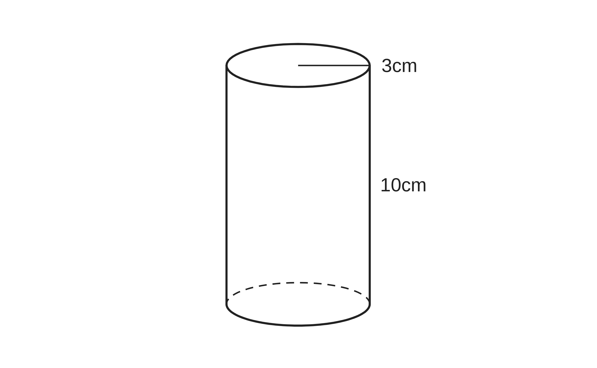
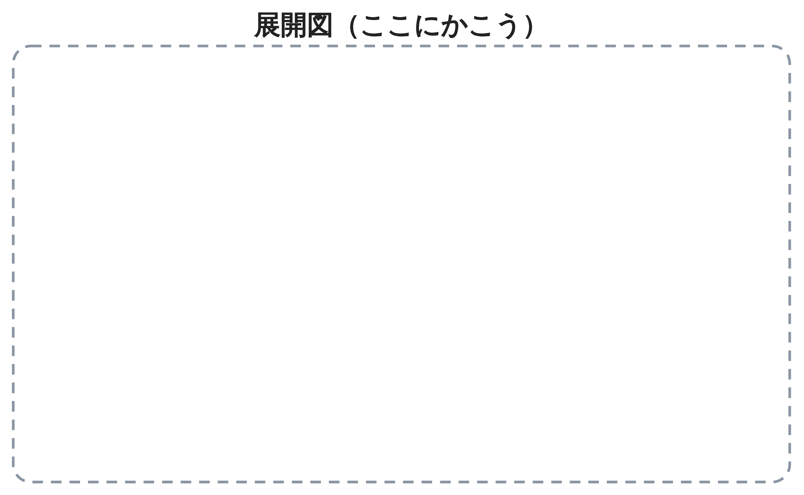
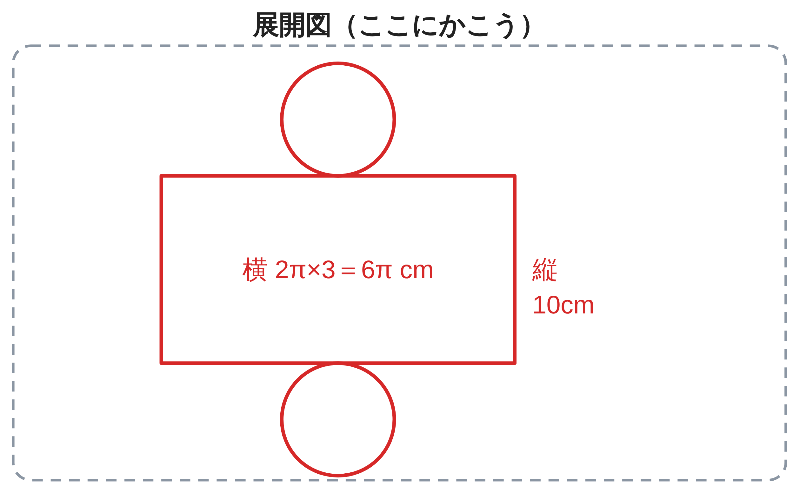
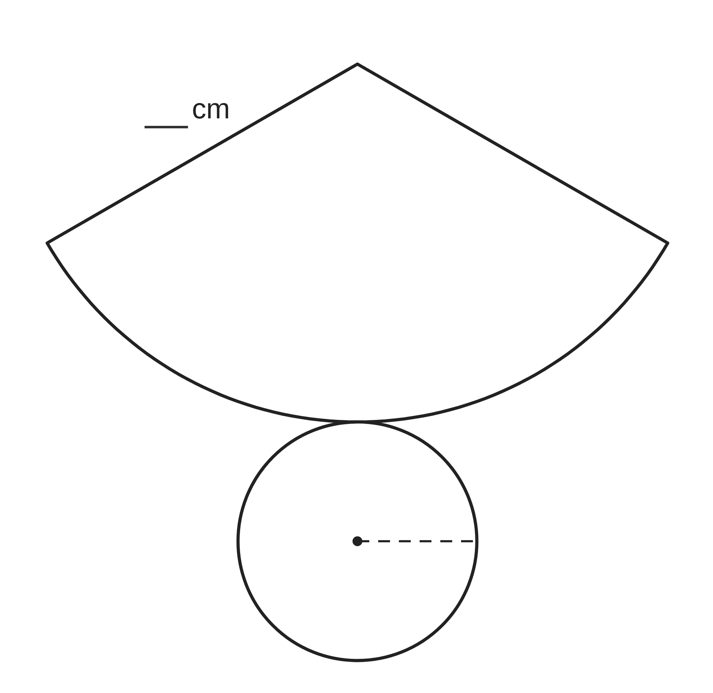
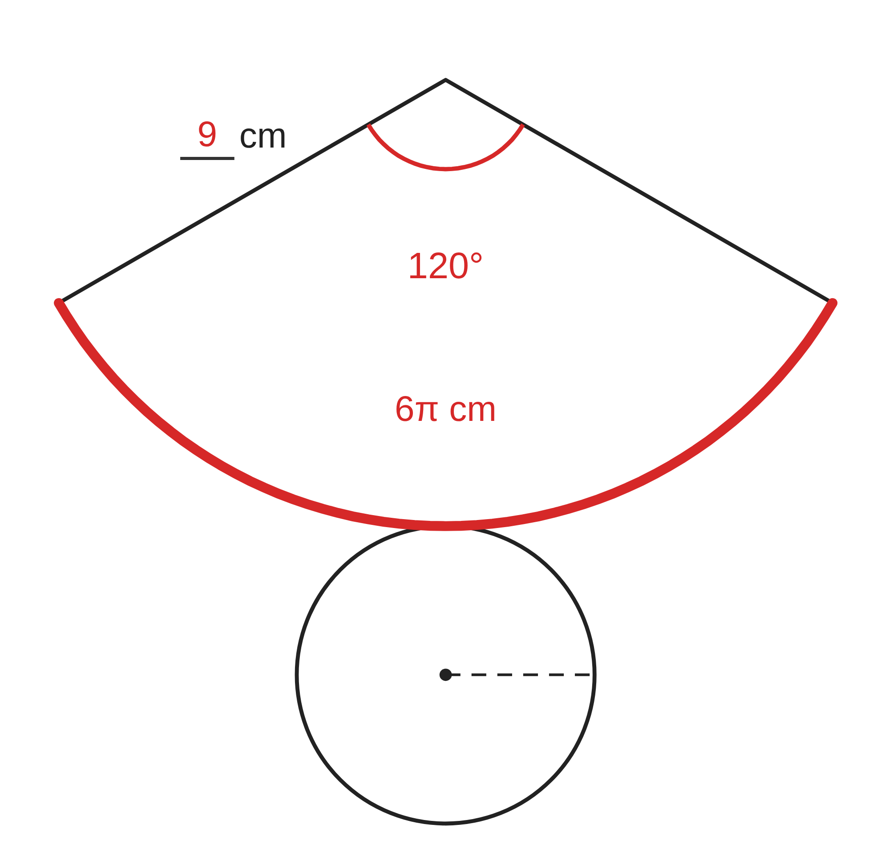

ペア学習
第7時 立体を切り開いて、平面の上で考えよう
1人1問ずつ、出題し合う。ことばの意味を、自分の言葉で言う。
立面図
平面図
投影図
点線
空間図形 第7時 立体を切り開いて、平面の上で考えよう
めあて
第7時 立体を切り開いて、平面の上で考えよう
学習課題
円柱の形をした缶の側面に、すきまなく、重なりもないように、ラベルをはりたい。底面の半径は 3cm、高さは 10cm である。ラベルは、どんな形で、どんな大きさにすればよいだろう。


【自分の考え】ラベルの形と、縦・横の長さを書こう。
空間図形 第7時 立体を切り開いて、平面の上で考えよう
学習課題のまとめ
第7時 立体を切り開いて、平面の上で考えよう
缶の側面にはるラベルは、どんな形で、どんな大きさにすればよいだろう。
ラベルの形と、縦・横の長さ
側面を切り開くと、長方形になる。
縦 … 缶の高さ 10cm
横 … 底面の円周 2π×3＝6π（cm）

空間図形 第7時 立体を切り開いて、平面の上で考えよう
ことば
第7時 立体を切り開いて、平面の上で考えよう
立体を切り開いて、平面上に広げた図を という。
円柱の側面の展開図は で、
横の長さは底面の に等しい。
円錐の側面の展開図は で、
弧の長さは底面の円周に等しい。
円錐の側面のおうぎ形の半径は、円錐の の長さに等しい。
空間図形 第7時 立体を切り開いて、平面の上で考えよう
ことば
第7時 立体を切り開いて、平面の上で考えよう
立体を切り開いて、平面上に広げた図を 展開図 という。
円柱の側面の展開図は 長方形 で、
横の長さは底面の 円周 に等しい。
円錐の側面の展開図は おうぎ形 で、
弧の長さは底面の円周に等しい。
円錐の側面のおうぎ形の半径は、円錐の 母線 の長さに等しい。
空間図形 第7時 立体を切り開いて、平面の上で考えよう
例題
第7時 立体を切り開いて、平面の上で考えよう
底面の半径が cm、
母線の長さが cm の円錐がある。
展開図で、側面になるおうぎ形の
中心角を求めよう。

空間図形 第7時 立体を切り開いて、平面の上で考えよう
例題 解答
第7時 立体を切り開いて、平面の上で考えよう
底面の半径が 3cm、母線の長さが 9cm の円錐。側面になるおうぎ形の中心角は？
弧の長さ ＝ 底面の円周
2π×3＝6π（cm）
半径 9cm の円の周 2π×9＝18π（cm）
中心角は、円の周の 6π⁄18π
360°×6π⁄18π＝120°

空間図形 第7時 立体を切り開いて、平面の上で考えよう
考えよう
第7時 立体を切り開いて、平面の上で考えよう
発展
演習まで解き終わった人は、考えてみよう！
3辺の長さが変わっても、もっとも短いかけ方を
見つけられるだろうか。きまりを考えよう。
①
展開図をかいて、A から G までの、ひもの通り道をかこう。
いくつかのかけ方を、くらべよう。（点と点の間かく＝1cm）
②
もっとも短いかけ方と、そう考えた理由を、説明しよう。
空間図形 第7時 立体を切り開いて、平面の上で考えよう
振り返り
第7時 立体を切り開いて、平面の上で考えよう
今日のめあて
展開図
円周
おうぎ形
母線
今日わかったことを、ペアで1つずつ言い合おう。
ワークシートと演習プリントを出そう。
空間図形 第7時 立体を切り開いて、平面の上で考えよう